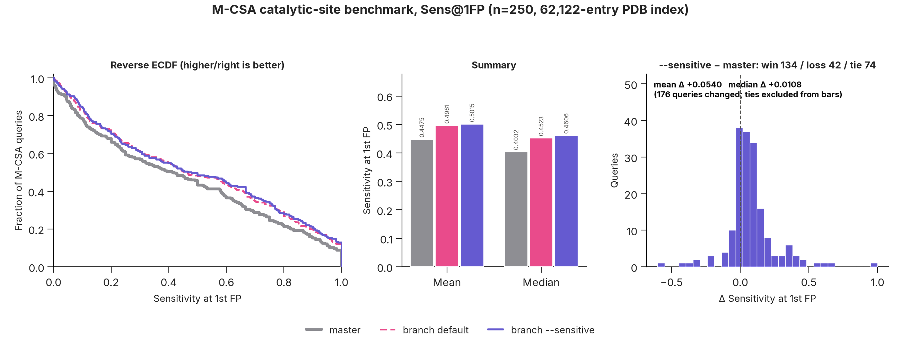
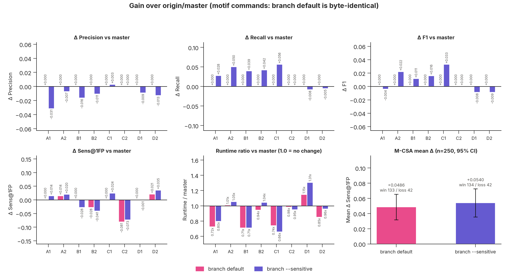
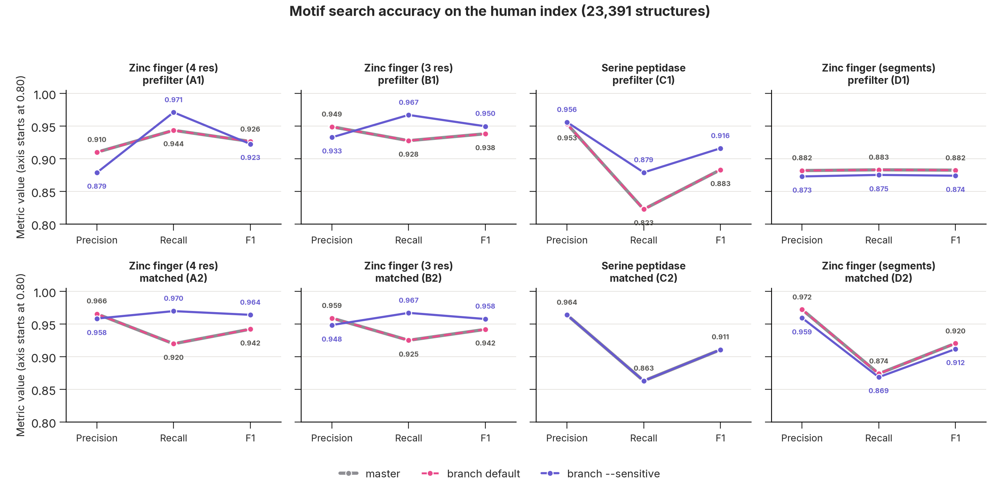
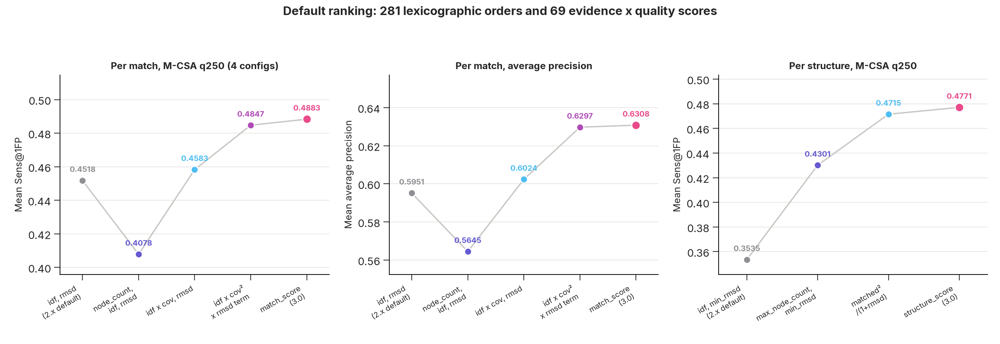
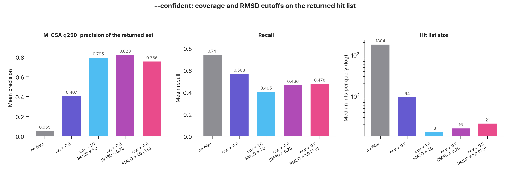
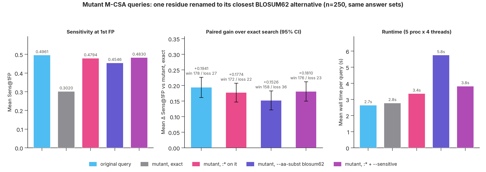
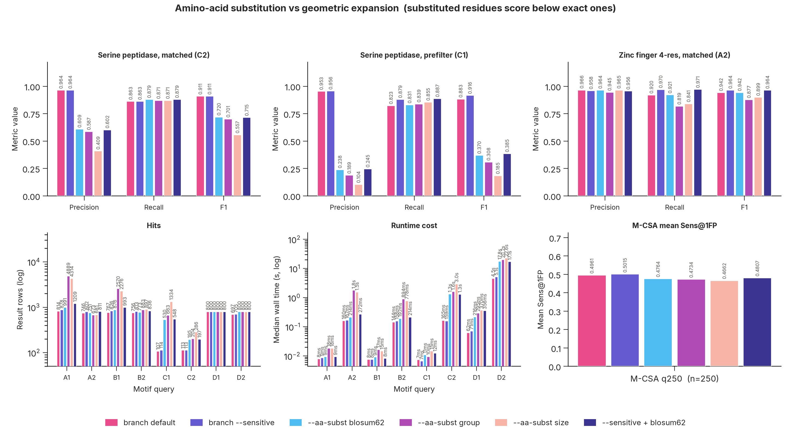
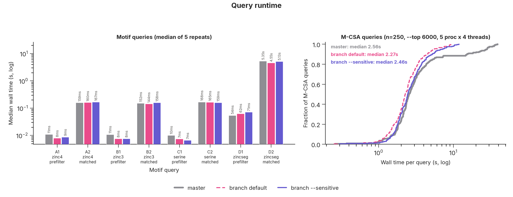
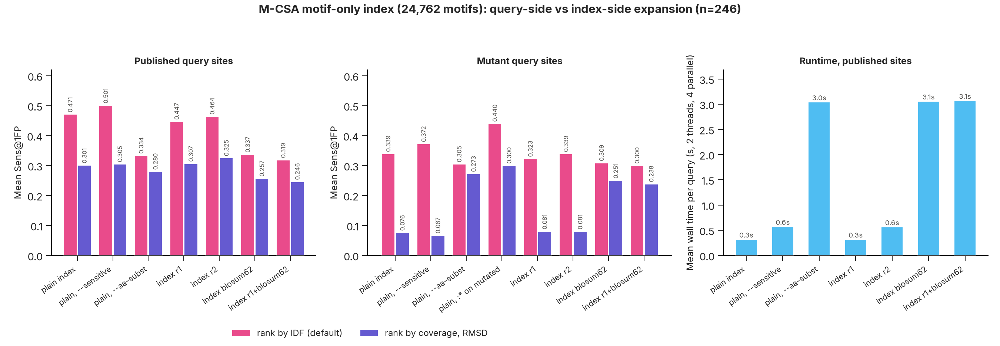

Release report · 18 September 2026
Discontinuous motif search across the protein universe. This release adds a sensitivity preset, amino-acid substitution, a confident-hits filter, and new default ranking — measured on 742 M-CSA catalytic sites and the published zinc-finger and serine-peptidase protocols.
:* wins back most of the loss.Every number on this page comes from a single rerun of the benchmark suite at
commit b907df5; the scripts and raw tables are listed at the end.
| Feature | Flag | What it does |
|---|---|---|
| Sensitive search | --sensitive | A residue pair may fall in neighbouring distance/angle bins, several features at once |
| Amino-acid substitution | --aa-subst, :* | Matches chemically similar residues, scored below exact ones |
| Confident hits | --confident | Keeps only full, low-RMSD matches instead of every partial one |
| Index-time expansion | index --expand-radius | Stores the neighbourhood in the index instead of expanding the query |
| Novelty screening | --novelty-mode | One KNOWN / PARTIAL / NOVEL row per query, with its evidence and the best hit's residues |
| Multi-character chains | -q AA_250, --chain-sep | mmCIF chain IDs that are not a single letter; 2.x crashed on these files |
| Deformation metrics | drmsd | Superposition-free deviation, as column, sort key and filter |
| Mapped lookup caches | automatic | 53.7 M-entry lookup loads in 17.5 ms instead of 2.98 s |
M-CSA: 250 catalytic sites of 3–21 residues searched against a 62,122-entry PDB index, scored against the M-CSA homologues of each site. Sensitivity at the first false positive is a k=1 metric, so paired win/loss counts are given alongside.
| Config | Sens@1FP | Δ master | win / loss | no TP | s / query |
|---|---|---|---|---|---|
| master (2.x) | 0.4475 | — | — | 10 | 5.35 |
| 3.0 default | 0.4961 | +0.0486 | 133 / 42 | 1 | 2.65 |
--sensitive | 0.5015 | +0.0540 | 134 / 42 | 1 | 3.02 |
--aa-subst blosum62 | 0.4764 | +0.0289 | 124 / 56 | 1 | 5.69 |
--aa-subst group | 0.4734 | +0.0259 | 120 / 60 | 1 | 6.54 |
--aa-subst size | 0.4662 | +0.0188 | 105 / 67 | 3 | 6.79 |
--sensitive --aa-subst | 0.4807 | +0.0333 | 120 / 61 | 2 | 5.55 |

--sensitive--aa-subst blosum62groupsize
Folddisco turns each residue pair into a hash by quantising its geometry — two distances and three angles — into bins. Lookup is exact on that hash, so a pair whose distance sits a tenth of an Ångström from a bin edge in the query, and just across it in the target, produces a different hash and the pair is missed. Motifs deform; boundaries do not move with them.
--sensitive (--expand-radius 2)
adds.The radius is the number of features allowed to sit in a neighbouring bin
simultaneously, not how far a feature may move — -d and -a set the distance
each feature may travel, and wide tolerances are sub-stepped so no bin in between is skipped. Cost on
M-CSA: 3.02 s per query against 2.65 s, for +0.0054 sensitivity over the default and +0.054 over 2.x.
It is worth pairing with --max-node: the extra recall costs precision otherwise.
Four motifs (3–23 residues) searched against 23,391 human AlphaFold structures under the published protocol: zinc fingers against 761 accessions, the Ser-His-Asp triad against 124 MEROPS S01 accessions. The branch returns the same structures as 2.x on all eight commands; F1 is therefore unchanged, and only the order differs.
| Command | F1, master | F1, --sensitive | Δ |
|---|---|---|---|
| Zinc finger, 4 residues, matched | 0.9421 | 0.9641 | +0.022 |
| Zinc finger, 3 residues, matched | 0.9418 | 0.9577 | +0.016 |
| Ser-His-Asp triad, prefilter | 0.8831 | 0.9160 | +0.033 |
| Two-segment zinc, 23 residues, matched | 0.9204 | 0.9117 | −0.009 |

2.x ranked matches by IDF, then RMSD — a heuristic. We searched 281 lexicographic orders over every implemented metric and 69 composite scores of the form evidence × quality, scoring each on M-CSA and the motif set, then validated the winners on 492 M-CSA queries never used for selection.
| Per-match order | Sens@1FP | Avg precision | Motif Sens@1FP |
|---|---|---|---|
idf, rmsd (2.x) | 0.4518 | 0.5951 | 0.1817 |
| best plain alternative | 0.4523 | 0.5951 | 0.1837 |
node_count, idf, rmsd | 0.4078 | 0.5645 | 0.1958 |
| idf × coverage, rmsd | 0.4583 | 0.6024 | 0.2172 |
match_score = idf × coverage² × TM-score | 0.4883 | 0.6308 | 0.2300 |
On the held-out 492 queries the new order beats 2.x by +0.028 to
+0.054 Sens@1FP and +0.034 to +0.050
average precision, every 95% interval excluding zero, at roughly 2.5 wins per loss. Per structure the
same shape wins: structure_score = matched² × √idf / (1 + RMSD), at 0.4863 against 0.4321
for coverage-first and 0.3699 for 2.x.

structure_score reduces to √idf/(1+RMSD), which ranks two of four queries worse at the very
first false positive (average precision is unchanged at 0.878). For family-level searches with a coverage
filter, --sort-by max_node_count,min_rmsd restores the coverage-first order.
By default a query returns every structure sharing part of the motif — a median of
1,804 structures per M-CSA query, 6% of them correct. --confident keeps matches covering
at least 80% of the query residues (all of them for a 3–4 residue motif) within 1 Å RMSD; past 12
residues, where matches are assembled from several parts, coverage alone decides.
| M-CSA q250 | Precision | Recall | F1 | Median hits | Queries with a hit |
|---|---|---|---|---|---|
| default output | 0.058 | 0.751 | 0.084 | 6,000 | 100% |
--confident | 0.757 | 0.475 | 0.508 | 55 | 92% |
--confident --sensitive | 0.750 | 0.484 | 0.510 | 63 | 92% |
On the zinc-finger and serine-peptidase protocols one flag reproduces filters that
were tuned per query by hand — --covered-node 3 --max-node 4 --rmsd 1.0 and friends:
| Motif (human proteome) | Filter | Precision | Recall | F1 | Hits |
|---|---|---|---|---|---|
| Zinc finger, 4 residues 1G2F F207,F212,F225,F229 | none | 0.492 | 0.974 | 0.654 | 7,425 |
| protocol, by hand | 0.966 | 0.920 | 0.942 | 746 | |
--confident | 0.961 | 0.928 | 0.944 | 4,304 | |
| Zinc finger, 3 residues 1G2F F207,F225,F229 | none | 0.551 | 0.972 | 0.703 | 7,171 |
| protocol, by hand | 0.959 | 0.925 | 0.942 | 756 | |
--confident | 0.903 | 0.958 | 0.930 | 5,744 | |
| Serine peptidase triad 4CHA B57,B102,C195 | none | 0.245 | 0.919 | 0.387 | 556 |
| protocol, by hand | 0.964 | 0.863 | 0.911 | 113 | |
--confident | 0.964 | 0.863 | 0.911 | 116 | |
| Zinc finger, 23-residue segments 1G2F F204-215,F222-232 | none | 0.038 | 1.000 | 0.072 | 404,416 |
| protocol, by hand | 0.972 | 0.874 | 0.920 | 697 | |
--confident | 0.996 | 0.356 | 0.525 | 407 |
The triad case is exact — same precision, same recall, 116 rows against 113 — and the
4-residue zinc finger beats the hand-tuned filter on F1. On the 23-residue segment query
--confident is deliberately precision-first: 0.996 precision at 0.356 recall, where the
hand-tuned --max-node 15 reaches 0.972 at 0.874. Lower the bar with
--confident --max-node-ratio 0.65 when recall matters more.

Substituted residues are scored below exact ones — weight 0.75 per substituted residue, IDF capped at the query's own pair, one substituted hit per residue pair — so exact matches keep the top of the list. Without that weighting, substitution ranked noise from common residues above exact matches and cost 0.11 Sens@1FP.
To measure what substitution buys, each M-CSA query had one catalytic residue renamed to its closest BLOSUM62 alternative (His→Tyr, Asp→Glu, …), leaving the answer sets untouched.
| Mutated query, 250 sites | Sens@1FP | Δ vs exact search | win / loss | s / query |
|---|---|---|---|---|
| original query (reference) | 0.4961 | — | — | 2.65 |
| mutated, exact search | 0.3020 | — | — | 2.78 |
mutated, :* on that residue | 0.4794 | +0.177 | 172 / 22 | 3.37 |
mutated, --aa-subst blosum62 | 0.4546 | +0.153 | 158 / 36 | 5.76 |
mutated, :* + --sensitive | 0.4830 | +0.181 | 176 / 23 | 3.83 |


On answer sets defined by exact residue identity, substitution is neutral at best — which is what the M-CSA table above shows. It is worth its cost when the residues may differ.
Matching now pre-selects target residues by amino-acid code for large queries, with byte-identical output. Default M-CSA queries run in half the time of 2.x, and sensitive search costs 3.0 s where the first implementation cost 9.6 s.

Expansion can also be baked into an index. On a motif-only index built from 24,762 annotated M-CSA sites, index-side expansion is not a substitute for expanding the query: it scores 0.025–0.037 lower, no query returns the same ranking, and the returned motifs overlap only 43–58%. Shifting the query and shifting the targets reach different residue pairs near bin edges. The index also grows 3.5× at radius 1 and 32× with substitution.

Large mmCIF assemblies label chains AR, AW or
10, not A. 2.x read the wrong field for these files and crashed on them;
3.0 keeps the author chain ID, up to eight characters, and accepts it in a query. Because
AR119 is ambiguous, multi-character and numeric chains take a separator:
$ folddisco query -i complexdir_folddisco -p 4V8S-assembly1.cif.gz \
-q AR_119,AR_364,AR_392 --format-output tid,node_count,match_score,rmsd,matching_residues
4V8S-assembly1.cif.gz 3 21.2189 0.0000 AR_119,AR_364,AR_392
4AYB-assembly1.cif.gz 3 15.4677 0.1150 B119,B364,B392
1TWG-assembly1.cif.gz 2 1.4679 0.4712 _,A219,A214
The motif — Ile119, Phe364, Ile392 of the two-letter chain AR — finds its
own assembly at 0 Å and the same three residues on the single-letter chain B of a
homologous assembly at 0.115 Å, then a partial two-residue match. Each hit is spelled in its own
convention: AR_119 keeps the separator because the chain needs it, B119 does
not, and _ marks a query residue with no match. --chain-sep forces the
explicit form everywhere (A_81,A_128,A_231), which is what you want when a downstream
parser expects one shape.
The same query on 2.x ends in panicked at src/structure/io/cif.rs: Chain name should be provided. Leaving the separator out is now a diagnostic rather than a wrong answer: Query 'AR119' names chain 'A' and chain 'R' in 'R119'. A range stays in one chain, and a multi-character or numeric chain needs the separator, as in 'AA_250'.
Default output and index files are unchanged for single-letter chains, so existing
pipelines and indices keep working. A related fix: the residue that ends a chain used to be filed
under the next chain, so 4CHA A11 was reported as B11; matched-residue
labels on multi-chain entries change accordingly.
Shorter items, for completeness.
--novelty-mode prints one verdict row per query instead of a hit list,
with the evidence behind it and the residues the best hit matched:
$ folddisco query -q designs.txt -i index/mcsa_subset_folddisco --novelty-mode --novelty-rmsd 0.5 --header query_id verdict candidates hits index_coverage best_hit best_coverage best_rmsd best_residues query/4CHA.pdb KNOWN 11656 10925 1.0000 mcsa_subset/M0387/pdb4cha.pdb 1.0000 0.0000 B57,B102,C195 query/1G2F.pdb KNOWN 2291 2250 1.0000 mcsa_subset/M0035/pdb6zr5.pdb 1.0000 0.4608 D27,D32,D45,D49 query/2N6N.pdb PARTIAL 2326 2324 1.0000 mcsa_subset/M0251/pdb6rla.pdb 1.0000 0.6540 B4234,B4298,B4225 query/1SU6.pdb NO_HASHES 0 0 0.0000 NA NA NA NA
KNOWN needs both enough coverage (--novelty-coverage, 0.8) and a
close enough best hit (--novelty-rmsd, 2.0 Å) — the same residues in another arrangement
cover everything and are still a different motif. Covered but failing either is PARTIAL, nothing
covered is NOVEL, and a query whose residues are too far apart to hash is NO_HASHES rather
than a discovery. best_residues writes _ where the hit missed a query residue,
so a 2-of-3 match reads C1145,_,C1128.
The evidence columns come from the index before filters: candidates and
index_coverage show what was there to match, so a NOVEL verdict caused by strict filters is
visible in the row (and warned on stderr). Short motifs cover 1.0 against something almost anywhere, so
tighten --novelty-rmsd when screening 3–4 residue designs — the 2N6N row above is KNOWN at
the 2.0 Å default and PARTIAL at 0.5 Å.
drmsd and max_dist_deviation compare internal distances
without superposition, which suits hinged motifs; both work as output columns, sort keys and filters.
On a synthetic 20° hinge the default search returns a 3-residue mis-assignment at 2.81 Å while
--sensitive recovers all 8 residues at 1.31 Å.
Index and Foldcomp lookup tables are memory-mapped caches built on first use, so a large database stops re-parsing its lookup on every query.
| Table | 2.x load | 3.0 load | Memory |
|---|---|---|---|
| AFDB50 v4 index lookup, 53.7 M entries | 2.98 s | 17.5 ms | 8.55 GB → 2.10 GB |
| AFDB v6 Foldcomp lookup, 241 M entries | 6.14 s | 45.8 ms | 27.9 GB → 5.66 GB |
164:H) passed the index lookup and were then dropped at
matching — they now match.A204-2150000000) is reported instead of being killed by the
out-of-memory reaper; a range may repeat its chain (F204-F215).foldcomp feature works again.--dist-ratio, none of which beat the simpler path.--nonrigid is now --sensitive.-d/-a with several values now use only the widest.PDBTrRosetta, default binning).cd fd-branchbench REPEATS=5 WARMUP=1 ./scripts/run_all.sh 250 # motif, M-CSA, mutant, --confident, figures defaults/scripts/collect.sh <binary> # raw output for ranking and filter selection defaults/scripts/analyze.py; defaults/scripts/composite2.py; defaults/scripts/plot.py index_expansion/scripts/run_queries.sh # motif-only index study
Tables: fd-branchbench/result/ (motif, M-CSA, mutant, confident, answer
classes, provenance), defaults/result/ (ranking and filter grids),
index_expansion/result/. Measurement detail lives in
folddisco/docs/feature_evaluation.md, branch state in docs/UPDATE_REPORT.md.